Approval Gate 1 · Production masters
Chess Patzer — Editorial left overline
The review-lens mark, geometry, and palette are unchanged. The new wordmark keeps Patzer dominant while a small muted CHESS identifier aligns to its left edge.
Primary horizontal · light UI
Stacked supporting mark

Application header
Compact lockup
Install icons
Approval question: Approve this exact Editorial hierarchy and proportion as the production master direction? Runtime replacement and broader in-context proofs remain separate.